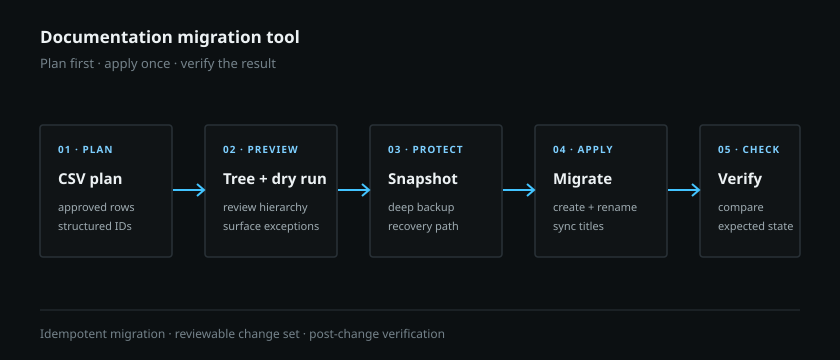

Documentation migration · 2026
Documentation migration tool
Built a CSV-driven command-line tool that turns an approved content plan into a validated, reversible documentation migration.
Problem
A live technical documentation space needed a major rename and hierarchy restructure. Moving pages by hand would make it difficult to review the intended structure, preserve a recovery path, or verify that the live result matched the approved plan.
What I built
- A CSV-driven plan that derives the intended hierarchy from structured identifiers.
- Dry-run mode and a local tree preview so the full change set could be reviewed before it touched the live space.
- Snapshots, deep backups, page creation, title synchronization, and post-change verification.
- Idempotent behavior so an interrupted or corrected migration could be rerun without duplicating work.

Result
The tool was used to rename and restructure more than 100 pages in a live technical documentation space. It turned a risky manual cleanup into a controlled engineering change with a review point before application and verification afterward.
100+ pagesrenamed and restructured in a live space
Dry runfull plan reviewed before application
Idempotentsafe to rerun after interruption or correction